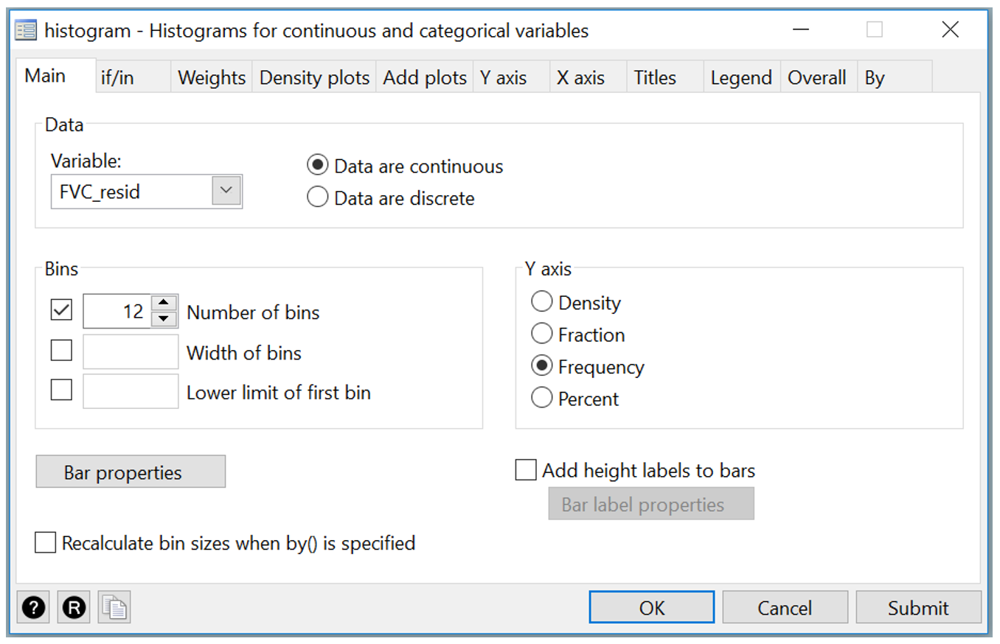

8 Stata notes
Creating a scatter plot
We will demonstrate using Stata for correlation and simple linear regression using the dataset Example_8.1.dta.
To create a scatter plot to explore the association between height and FVC click: Graphics > Twoway graph (scatter, line, etc.). In the twoway dialog box, click Create…
A new dialog box will open. Select the Basic plots radio button and highlight Scatter under Basic plots: (select type). Choose FVC for the Y variable and Height for the X variable.

Click the Accept button in the Plot 1 dialog box to return to the twoway dialog box, then click the OK or Submit button to produce the scatter plot shown in Figure 8.1.
[Command: twoway (scatter FVC Height)]
To add a fitted line, go back to the twoway dialog box. If you clicked the OK button, you can go to Graphics > Twoway graph (scatter, line, etc.) to bring it back again.

Click Create…, then select the Fit plots radio button and Linear prediction under Fit plots: (select type). Choose FVC for the Y variable and Height for the X variable.

Click the Accept button, then the OK or Submit button to produce the scatterplot below.
[Command: twoway (scatter FVC Height) (lfit FVC Height)]

Notice that a legend now appears, and the y-axis title is missing. To add a y-axis title, go to the Y axis tab in the twoway dialog box to enter your title as shown below.

You can click the Submit button to check how the scatter plot looks like. Next go the Legend tab and select the Hide legend radio button.

Click the OK or Submit button when you are finished to produce Figure 8.3.
[Command: twoway (scatter FVC Height) (lfit FVC Height), ytitle(Forced vital capacity (L)) legend(off)]
To save your graph, go to File > Save in the Graph window, and be sure to save your file as a PNG file:

Calculating a correlation coefficient
To calculate the Pearson’s correlation using the dataset Example_8.1.dta go to: Statistics > Summaries, tables, and tests > Summary and descriptive statistics > Pairwise correlations
Select the two variables, FVC and Height in the Variables box. You can click the Submit button to check the output. Next, tick the box for Print significance level for each entry to obtain the P-value and the box for Print number of observations for each entry to obtain the number of observations used as shown below.

Click the OK or the Submit button when you are done to produce Output 8.1,
[Command: pwcorr Height FVC, obs sig]
Fitting a simple linear regression model
We will fit a simple linear regression model with Example_8.1.dta to quantify the relationship between FVC and height.
Choose Statistics > Linear models and related > Linear regression
In the regress dialog box, select FVC as the Dependent variable, and Height as the Independent variable.

Click the OK or the Submit button when you are done to produce Outputs 8.2 and 8.3.
[Command: reg FVC Height]
Plotting residuals from a simple linear regression
To obtain the residuals, go to Statistics > Post estimation after running the regress command.
In the Postestimation Selector dialog box, select Predictions and their SEs, leverage statistics, distance statistics, etc. in the list under Predictions as shown below.

In the predict dialog box, choose the Residuals button and enter a New variable name (e.g. FVC_resid) for the residuals from the regression model.

Click OK button when you are done.
[Command: predict FVC_resid, residuals]
You can now check the assumption that the residuals are normally distributed by creating a histogram with the normal curve using Graphics > Histogram as shown in Stata Notes section for Module 2. Below is the histogram dialog box used to produce the graph in Figure 8.5.

[Command: histogram FVC_resid, bin(12) frequency normal]